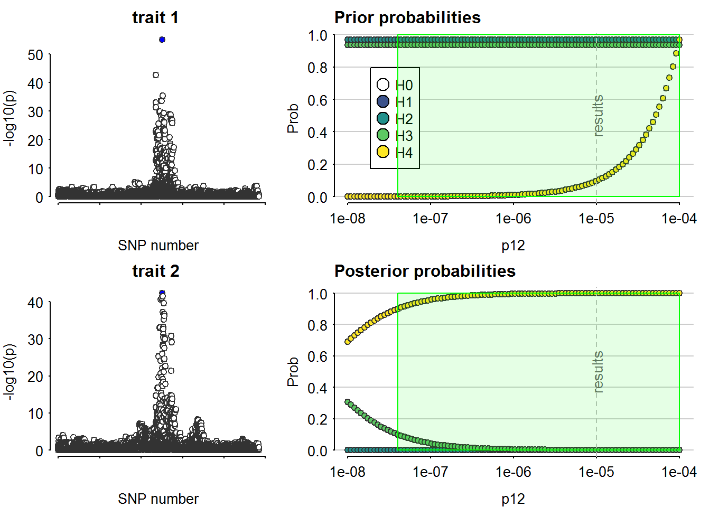
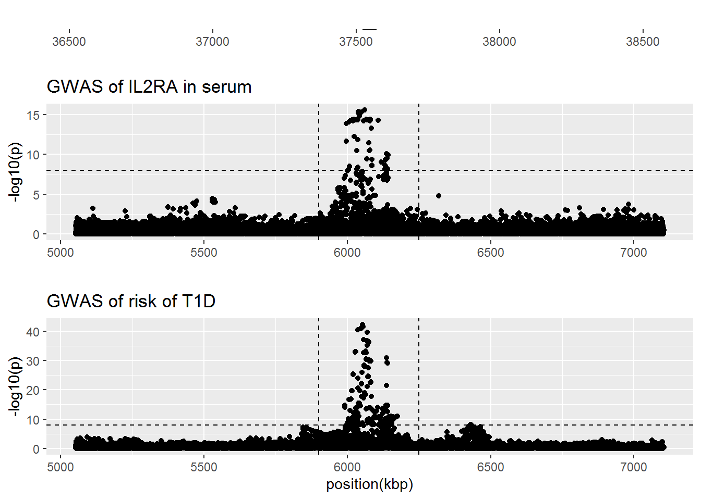
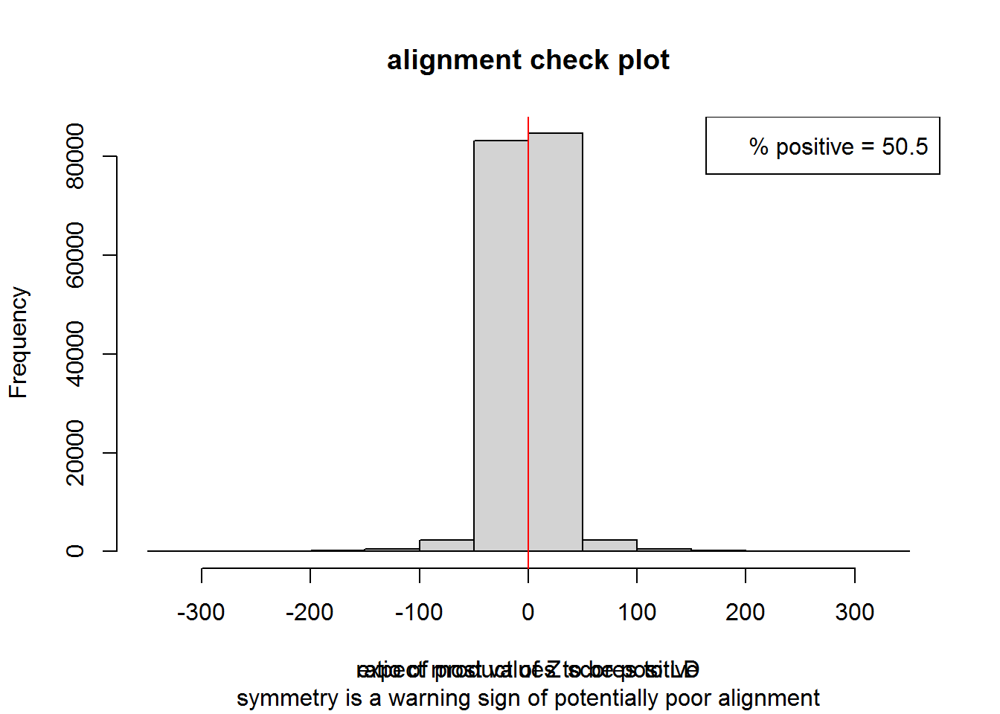
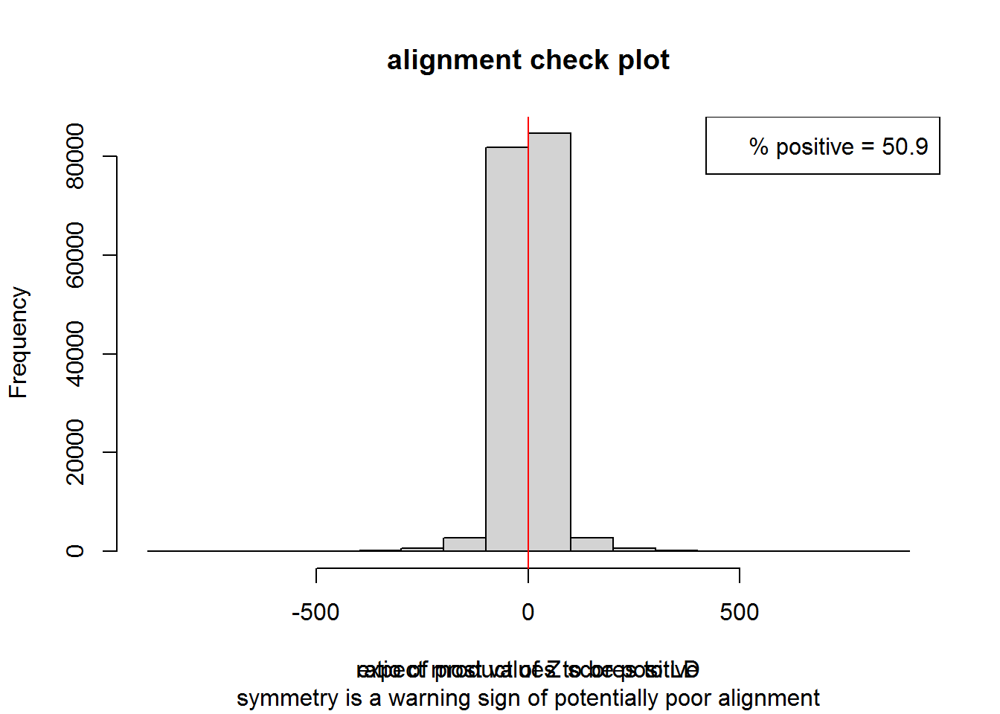
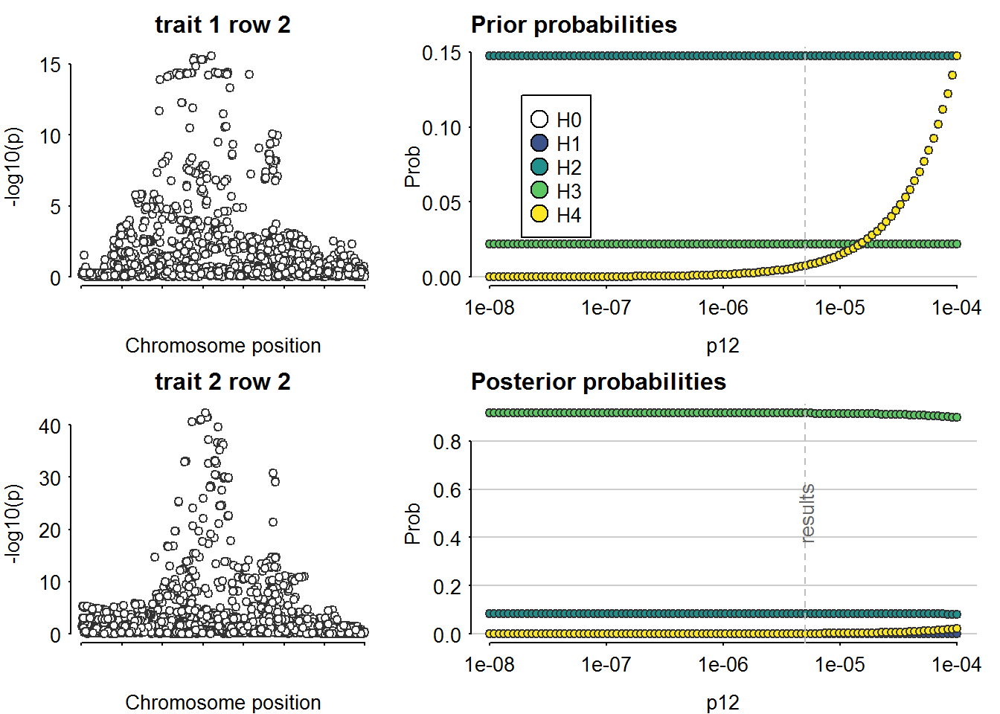
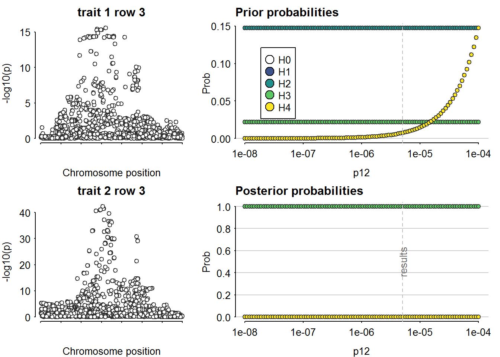

IL2RA
Tea Heikkilä, Emilia Kaiser & Jaakko Koskenniemi
2022-05-03
Last updated: 2023-05-04
Checks: 7 0
Knit directory: T1DSCREEN/
This reproducible R Markdown analysis was created with workflowr (version 1.7.0). The Checks tab describes the reproducibility checks that were applied when the results were created. The Past versions tab lists the development history.
Great! Since the R Markdown file has been committed to the Git repository, you know the exact version of the code that produced these results.
Great job! The global environment was empty. Objects defined in the global environment can affect the analysis in your R Markdown file in unknown ways. For reproduciblity it’s best to always run the code in an empty environment.
The command set.seed(20220313) was run prior to running
the code in the R Markdown file. Setting a seed ensures that any results
that rely on randomness, e.g. subsampling or permutations, are
reproducible.
Great job! Recording the operating system, R version, and package versions is critical for reproducibility.
Nice! There were no cached chunks for this analysis, so you can be confident that you successfully produced the results during this run.
Great job! Using relative paths to the files within your workflowr project makes it easier to run your code on other machines.
Great! You are using Git for version control. Tracking code development and connecting the code version to the results is critical for reproducibility.
The results in this page were generated with repository version 725b02d. See the Past versions tab to see a history of the changes made to the R Markdown and HTML files.
Note that you need to be careful to ensure that all relevant files for
the analysis have been committed to Git prior to generating the results
(you can use wflow_publish or
wflow_git_commit). workflowr only checks the R Markdown
file, but you know if there are other scripts or data files that it
depends on. Below is the status of the Git repository when the results
were generated:
Ignored files:
Ignored: .Rhistory
Ignored: .Rproj.user/
Ignored: data/README_cis_eqtl.txt
Ignored: data/README_cis_eqtl_AF.txt
Ignored: data/cis-EQTL-AF.txt
Ignored: data/cis_sumstats/2018-07-18_SNP_AF_for_AlleleB_combined_allele_counts_and_MAF_pos_added.txt
Ignored: refs/
Untracked files:
Untracked: data/cis_eqtl_sumstats/
Untracked: data/cis_sumstats/JAK1_T1D.rds
Untracked: data/cis_sumstats/JAK3_T1D.rds
Untracked: data/export/IFNAR2_eqtl_TwoSampleMR.csv
Untracked: data/export/IL2RA_eqtl_TwoSampleMR.csv
Untracked: data/export/IL2RB_eqtl_TwoSampleMR.csv
Untracked: data/export/IL2RG_eqtl_TwoSampleMR.csv
Untracked: data/export/IL6R_eqtl_TwoSampleMR.csv
Untracked: data/export/JAK1_T1D_TwoSampleMR.csv
Untracked: data/export/JAK1_eqtl_TwoSampleMR.csv
Untracked: data/export/JAK2_eqtl_TwoSampleMR.csv
Untracked: data/export/JAK3_T1D_TwoSampleMR.csv
Untracked: data/export/JAK3_eqtl_TwoSampleMR.csv
Untracked: data/export/TYK2_eqtl_TwoSampleMR.csv
Note that any generated files, e.g. HTML, png, CSS, etc., are not included in this status report because it is ok for generated content to have uncommitted changes.
These are the previous versions of the repository in which changes were
made to the R Markdown (analyses/IL2RA.Rmd) and HTML
(docs/IL2RA.html) files. If you’ve configured a remote Git
repository (see ?wflow_git_remote), click on the hyperlinks
in the table below to view the files as they were in that past version.
| File | Version | Author | Date | Message |
|---|---|---|---|---|
| html | 8a72b0c | jkoskenniemi | 2023-05-03 | Build site. |
| Rmd | 530d505 | jkoskenniemi | 2023-05-03 | Added eQTL data, corrected an error in coloc sensitivity figures |
| html | e0d3987 | jkoskenniemi | 2023-04-28 | Build site. |
| html | c8d146f | Jaakko Koskenniemi | 2023-04-26 | Build site. |
| html | 1dac76d | Jaakko Koskenniemi | 2023-04-26 | Build site. |
| Rmd | c2fe2f8 | Jaakko Koskenniemi | 2023-04-26 | First commit |
| html | 24d77f3 | Jaakko Koskenniemi | 2022-11-05 | Build site. |
| Rmd | e86595d | Jaakko Koskenniemi | 2022-11-05 | wflow_publish(c("analyses/CRP.Rmd", "analyses/CXCL10.Rmd", "analyses/IL2RA.Rmd", |
Load packages and import data
library(tidyverse)-- Attaching packages --------------------------------------- tidyverse 1.3.1 --v ggplot2 3.4.1 v purrr 0.3.4
v tibble 3.1.7 v dplyr 1.0.9
v tidyr 1.2.0 v stringr 1.4.0
v readr 2.1.2 v forcats 0.5.1Warning: package 'ggplot2' was built under R version 4.2.2-- Conflicts ------------------------------------------ tidyverse_conflicts() --
x dplyr::filter() masks stats::filter()
x dplyr::lag() masks stats::lag()library(data.table)
Attaching package: 'data.table'The following objects are masked from 'package:dplyr':
between, first, lastThe following object is masked from 'package:purrr':
transposelibrary(coloc)This is a new update to coloc.library(TwoSampleMR)TwoSampleMR version 0.5.6
[>] New: Option to use non-European LD reference panels for clumping etc
[>] Some studies temporarily quarantined to verify effect allele
[>] See news(package='TwoSampleMR') and https://gwas.mrcieu.ac.uk for further detailslibrary(ggpubr)
library(ieugwasr)API: public: http://gwas-api.mrcieu.ac.uk/
Attaching package: 'ieugwasr'The following object is masked from 'package:TwoSampleMR':
ld_matrixlibrary(rio)Warning: package 'rio' was built under R version 4.2.2library(here)Warning: package 'here' was built under R version 4.2.2here() starts at C:/Users/jajoko/Documents/T1DSCREENhere::i_am("analyses/IL2RA.Rmd")here() starts at C:/Users/jajoko/Documents/T1DSCREENeQTL
IL2RA_eqtl <- read_exposure_data("data/export/IL2RA_eqtl_TwoSampleMR.csv", sep=",")Warning in format_data(as.data.frame(exposure_dat), type = "exposure", snps =
NULL, : se column is not numeric. Coercing...Warning in format_data(as.data.frame(exposure_dat), type = "exposure", snps = NULL, : The following SNP(s) are missing required information for the MR tests and will be excluded
rs61839660
rs1323650
rs12722495
rs12722496
rs12722508
rs7909519
rs12722522
rs1323651
rs1323652
rs12722552
rs12722558
rs12722563
rs7893324
rs58820784
rs56249263
rs12722490
rs61839702
rs12244238
rs56236667
rs56055806
rs55998002
rs112298181
rs56121791
rs11598648
rs11818885
rs41295049
rs61839723
rs41295065
rs41295061
rs41295063
rs61839726
rs28360489
rs28360490
rs61839672
rs12722483
rs41295071
rs3118475
rs6602364
rs62626317
rs41295113
rs41295055
rs41294605
rs41295081
rs41294663
rs12243993
rs10795726
rs41294659
rs41295077
rs41295079
rs12254050
rs2076846
rs12244380
rs10905862
rs7076103
rs28360493
rs12255506
rs62626325
rs41294681
rs41295105
rs7087477
rs1570538
rs4747886
rs4747844
rs60080851
rs2274356
rs41295087
rs4749919
rs7477011
rs12722517
rs2025347
rs62626322
rs7068276
rs791593
rs1571026
rs61839728
rs10795733
rs10905578
rs1887027
rs61839683
rs4450090
rs10905716
rs61839721
rs61839690
rs1571025
rs12722489
rs10905897
rs61839680
rs78158294
rs10905599
rs11596136
rs72776098
rs10905604
rs10795738
rs41295151
rs10795737
rs12722559
rs17150879
rs11256942
rs41295135
rs11256933
rs7905327
rs11256611
rs12251307
rs11596223
rs11596355
rs12722523
rs12722551
rs12722527
rs12722553
rs17322780
rs4515866
rs1571022
rs8463
rs4625363
rs12722561
rs41294713
rs3750671
rs41295353
rs791590
rs12722515
rs2246031
rs41294611
rs11598494
rs41295117
rs6602360
rs11597633
rs5014463
rs17147986
rs12722587
rs12722602
rs12267519
rs12722588
rs4747837
rs10795840
rs7093069
rs10795763
rs4310524
rs17150787
rs1323658
rs7917726
rs66524564
rs7905816
rs11256899
rs5017841
rs11591302
rs7477416
rs7900385
rs41294671
rs764851
rs7095926
rs4291579
rs11256909
rs12722502
rs62626314
rs11256416
rs10795791
rs7072793
rs7073236
rs12722592
rs180819163
rs7077067
rs11597237
rs12722574
rs7096384
rs1924138
rs7900744
rs3763700
rs117216814
rs1983890
rs4747846
rs1972409
rs10905718
rs4749882
rs7920946
rs12412095
rs7084255
rs4749959
rs10905719
rs10905713
rs11593474
rs10905875
rs142389552
rs809356
rs11599116
rs2182410
rs7907829
rs4147359
rs1887028
rs10905879
rs144615386
rs4237412
rs11256943
rs11597646
rs4750016
rs11256957
rs943122
rs3763701
rs6602437
rs1887030
rs3750672
rs12722557
rs118172472
rs11256953
rs943121
rs143054291
rs7090512
rs2104496
rs7911362
rs7079460
rs3793713
rs74402755
rs7476043
rs61627527
rs77710246
rs4747882
rs11256954
rs61839724
rs706778
rs10905656
rs12571538
rs62626344
rs10905920
rs35420438
rs10905919
rs12218190
rs1887031
rs4750005
rs4749997
rs117679330
rs41294629
rs2274035
rs2025345
rs35272567
rs1323653
rs3930531
rs79051898
rs11598876
rs12358961
rs4291580
rs4750015
rs11256662
rs78419161
rs4436455
rs628387
rs62626308
rs3118471
rs11597094
rs3134882
rs11256994
rs11595314
rs10905924
rs4747880
rs3118469
rs10905925
rs3134883
rs11257022
rs11256342
rs34797495
rs7090504
rs12722610
rs41294683
rs12722596
rs7072398
rs185969160
rs34410111
rs4747890
rs10905668
rs62626327
rs41294625
rs791587
rs12570881
rs112407568
rs10905806
rs12783932
rs77531079
rs41294609
rs78717536
rs10905669
rs41294627
rs142055203
rs7906228
rs11256497
rs62626315
rs791588
rs41295119
rs41295047
rs12722497
rs41293995
rs35522661
rs12722486
rs11256593
rs112606276
rs41295355
rs72774103
rs674430
rs41294937
rs4749926
rs12253981
rs11256457
rs71479745
rs12722607
rs12251836
rs34181124
rs41295075
rs12719919
rs3920615
rs12219621
rs11256850
rs4749894
rs111845808
rs4750012
rs41294653
rs12219630
rs72772371
rs7099083
rs4747887
rs12722600
rs117415768
rs41295115
rs61839727
rs62626320
rs41295093
rs12218872
rs12722510
rs10400124
rs62626323
rs10400165
rs148676383
rs4747888
rs10400125
rs11256464
rs12722525
rs12722582
rs12722531
rs6602379
rs12722571
rs74786293
rs147487472
rs12722565
rs12264052
rs7906349
rs12722597
rs10795731
rs28360488
rs41294941
rs62626326
rs12722505
rs35405828
rs7899110
rs12268391
rs7094597
rs598182
rs4749955
rs3118470
rs4749856
rs11256771
rs8177688
rs41294923
rs41295241
rs8177763
rs147454255
rs12219947
rs10905750
rs7898286
rs12722595
rs12722519
rs8177656
rs11256601
rs76943221
rs10905912
rs41294645
rs12722484
rs10905742
rs11256668
rs11256726
rs11256719
rs3752987
rs72638734
rs11256717
rs7915363
rs72638735
rs7086816
rs180856086
rs7078535
rs4750528
rs12779809
rs41294657
rs12722514
rs79868704
rs72638733
rs3750670
rs72638732
rs882777
rs2256774
rs11256718
rs12414192
rs77347828
rs79723697
rs17142347
rs4459190
rs7906173
rs7910212
rs12415847
rs4749859
rs12220852
rs7096838
rs2185138
rs4749957
rs11256667
rs765060
rs11256258
rs4747845
rs10795264
rs113988697
rs2025346
rs11257057
rs4750024
rs6601979
rs11256272
rs146850358
rs12572054
rs4747865
rs74934234
rs10905773
rs62626313
rs928926
rs41295125
rs141043949
rs142921071
rs139928536
rs11256313
rs11816044
rs6602450
rs117171201
rs77950884
rs7917197
rs79091982
rs4750017
rs76781384
rs584797
rs12778662
rs75254674
rs10905641
rs117162360
rs78509767
rs12722513
rs10795752
rs3814195
rs10752194
rs4749920
rs11256516
rs11255662
rs605015
rs140764661
rs2476491
rs55768419
rs138837288
rs12722516
rs145989601
rs3763699
rs36055263
rs80177247
rs654876
rs11256932
rs8177685
rs11256860
rs669534
rs642104
rs658386
rs11256879
rs1073646
rs41294925
rs4749921
rs12572255
rs62626318
rs2245675
rs7894037
rs80062330
rs12571090
rs657600
rs8177633
rs613960
rs8177636
rs7896238
rs629298
rs28451883
rs7923054
rs11256456
rs55952739
rs10905913
rs3136611
rs643503
rs12572233
rs76806470
rs28360485
rs191805217
rs657523
rs74341195
rs618982
rs668796
rs79046049
rs143117642
rs12254905
rs2256852
rs11256996
rs72774040
rs185962751
rs652318
rs653265
rs942201
rs609587
rs8177631
rs8177614
rs11599186
rs11256851
rs2274358
rs79390874
rs10508299
rs75671286
rs185037130
rs67770309
rs8177587
rs1107345
rs12572136
rs79275575
rs8177613
rs8177586
rs12252826
rs7097780
rs41260244
rs2274359
rs4749924
rs637906
rs188088889
rs112183050
rs8177757
rs6602398
rs57237079
rs61856140
rs8177590
rs111985910
rs56259338
rs1323657
rs139720132
rs11256848
rs10905634
rs41294655
rs11255774
rs61834460
rs12771615
rs12781700
rs7077401
rs35304127
rs7074372
rs12774228
rs11256369
rs11256009
rs12722604
rs12360409
rs79618354
rs11256442
rs117203648
rs7919660
rs619862
rs72781770
rs641736
rs4525120
rs4750008
rs12355507
rs643867
rs41295111
rs11255974
rs7920674
rs72781757
rs8177600
rs8177683
rs77782465
rs7073906
rs11255698
rs146316727
rs11252899
rs150876664
rs111262797
rs12774886
rs34225924
rs41295361
rs72774061
rs7100984
rs41295107
rs41295083
rs1832528
rs1976655
rs72774164
rs74842916
rs7069322
rs12777477
rs12415924
rs41295067
rs11252967
rs17151105
rs10905905
rs4748095
rs73609935
rs12776432
rs41295139
rs11255971
rs146027168
rs7893735
rs12572197
rs7096344
rs676063
rs12767690
rs181431100
rs36049919
rs8177777
rs149868039
rs17319759
rs2031229
rs61832959
rs11258455
rs7083579
rs7919913
rs41295141
rs1937899
rs7067928
rs7082434
rs9423388
rs78695884
rs11522542
rs34569715
rs7920831
rs143431627
rs146509471
rs41294931
rs12414120
rs12782302
rs76962845
rs6602330
rs7090411
rs145265776
rs11524372
rs6602211
rs11253005
rs10904424
rs2387092
rs12785055
rs12260233
rs10508298
rs56369297
rs1937914
rs8177653
rs61729619
rs3181148
rs34142252
rs11258586
rs41295131
rs75406471
rs7096751
rs10905283
rs6601913
rs7897031
rs138181457
rs612314
rs2398206
rs11253004
rs41295137
rs11252965
rs190285281
rs7909379
rs12776280
rs7910451
rs8177643
rs11517339
rs8177701
rs1937877
rs4880705
rs41295357
rs2895063
rs7899887
rs2398205
rs62626321
rs11256946
rs1937915
rs7095942
rs11253001
rs1831977
rs11252984
rs7099915
rs11255780
rs72781754
rs1937876
rs7100514
rs11252993
rs11252994
rs1937911
rs1937912
rs56051527
rs2804109
rs41294029
rs7913986
rs2398200
rs72638730
rs11253000
rs146916977
rs7917637
rs2398201
rs7924169
rs11252975
rs34074567
rs12256367
rs11253002
rs11252983
rs11257012
rs11492957
rs11252998
rs17142323
rs1937875
rs117292603
rs9423556
rs2398199
rs74827952
rs11252974
rs117076487
rs11252999
rs72638731
rs6601911
rs66500137
rs11252982
rs6601912
rs11252987
rs11252988
rs7913871
rs11252973
rs11252979
rs11252986
rs41295155
rs7086693
rs4547003
rs11252996
rs11252995
rs11252989
rs7081702
rs11252991
rs11252990
rs17146857
rs181464025
rs11492958
rs41294943
rs7910445
rs7089684
rs35368816
rs7741
rs4565809
rs11252969
rs12359234
rs11517340
rs41294919
rs74697033
rs11517342
rs10466308
rWarning in format_data(as.data.frame(exposure_dat), type = "exposure", snps =
NULL, : None of the provided SNPs can be used for MR analysis, they are missing
required information.IL2RA_T1D <- read_outcome_data("data/export/IL2RA_T1D_TwoSampleMR.csv", sep=",")
IL2RA <- harmonise_data(IL2RA_eqtl, IL2RA_T1D)Harmonising Whole blood IL2RA mRNA (4vucPG) and Risk of type 1 diabetes (xN25Oe)Removing the following SNPs for incompatible alleles:
rs11592539, rs146234410, rs5027484, rs7894984Removing the following SNPs for being palindromic with intermediate allele frequencies:
rs10444202, rs10795239, rs10795240, rs10795260, rs10795263, rs10795591, rs10795595, rs10795990, rs10905054, rs10905919, rs10905924, rs10905925, rs1110030, rs11252965, rs11252969, rs11252984, rs11252986, rs11252995, rs11253001, rs11253120, rs11259366, rs11517339, rs11596992, rs11598835, rs12218872, rs12219621, rs12249094, rs12250785, rs12258845, rs12416002, rs12768094, rs1372800, rs1417017, rs1417026, rs189900452, rs1937877, rs1937911, rs1937918, rs2263201, rs2380208, rs2386632, rs2387089, rs2398200, rs2398206, rs2486876, rs2490678, rs2791417, rs2791425, rs2895063, rs34074567, rs34797495, rs3750638, rs4242800, rs4282898, rs4291579, rs4357593, rs4427472, rs4430409, rs4436455, rs4494227, rs4497300, rs4567357, rs4747385, rs4747846, rs4747892, rs4747960, rs4748301, rs4748304, rs4748361, rs4748627, rs4880712, rs4880713, rs4880727, rs4881442, rs4881462, rs584804, rs630516, rs645611, rs6601912, rs6602364, rs672624, rs678304, rs7071371, rs7073128, rs7088072, rs7088914, rs7091223, rs7896234, rs7896512, rs7897260, rs7900903, rs7910038, rs7914609, rs7916376, rs7916509, rs885046, rs9423400, rs9423596, rs9424179Manhattan plots
#create Manhattan plots with vertical lines indicating the selected area (see below 2.4)
IL2RA_eqtl.fig <-
IL2RA %>%
ggplot(aes(x = pos.exposure/1000, y=-log10(pval.exposure))) +
geom_point()+
geom_hline(yintercept=8, linetype="dashed")+
ggtitle("GWAS of IL2RA gene expression in blood") +
ylab("-log10(p)") +
xlab(NULL)
IL2RA_T1D.fig <-
IL2RA %>%
ggplot()+
geom_point(mapping=aes(x = pos.exposure/1000, y=-log10(pval.outcome))) +
geom_hline(yintercept=8, linetype="dashed")+
# geom_vline(xintercept=36.9e6/1000, linetype="dashed")+
# geom_vline(xintercept=37.3e6/1000, linetype="dashed")+
ggtitle("GWAS of risk of T1D") +
ylab("-log10(p)") +
xlab("position(kbp)")
#Obtain range for figure of gene
layer_scales(IL2RA_T1D.fig)$x$range$range[1] 5094.868 7077.974IL2RA_gene.fig <-
ggplot(data = IL2RA) +
geom_blank() +
geom_segment(x=37521.878, xend=37571.094, y=1, yend=1, linewidth = 2) +
annotate("text", label = "IL2RA",
x= (37521.878 + 37571.094) / 2, y=1, hjust = 0.5, vjust = -1) +
xlim(36521.878, 38571.094) +
ylim(0.75, 2) +
ylab(NULL) + xlab(NULL) +
theme(axis.text.y = element_blank(), axis.ticks.y = element_blank(),
panel.grid.major.y = element_blank(),
panel.grid.minor.y = element_blank())
fig_IL2RA_manhattan <- ggarrange(IL2RA_gene.fig, IL2RA_eqtl.fig, IL2RA_T1D.fig,
heights = c(1, 3, 3), nrow = 3,
ncol = 1, align = "hv")
# ggsave("figures/IL2RA-manhattan-combined-fig.pdf",
# height = 6, width = 8, units = "in")Coloc assuming 1 causal variant
#recode MAF
IL2RA <- IL2RA %>%
mutate(maf.exposure = ifelse(eaf.exposure < 0.5, eaf.exposure, 1-eaf.exposure)) %>%
mutate(maf.outcome = ifelse(eaf.outcome < 0.5, eaf.outcome, 1-eaf.outcome))
colnames(IL2RA) [1] "SNP" "effect_allele.exposure" "other_allele.exposure"
[4] "effect_allele.outcome" "other_allele.outcome" "beta.exposure"
[7] "beta.outcome" "eaf.exposure" "eaf.outcome"
[10] "remove" "palindromic" "ambiguous"
[13] "id.outcome" "pos.outcome" "pval.outcome"
[16] "se.outcome" "ncase.outcome" "ncontrol.outcome"
[19] "samplesize.outcome" "outcome" "mr_keep.outcome"
[22] "pval_origin.outcome" "data_source.outcome" "pval.exposure"
[25] "pos.exposure" "samplesize.exposure" "se.exposure"
[28] "exposure" "mr_keep.exposure" "pval_origin.exposure"
[31] "id.exposure" "data_source.exposure" "action"
[34] "mr_keep" "maf.exposure" "maf.outcome" D1_eqtl <- list(
type = "quant", # quantitative trait
pvalues = IL2RA$pval.exposure,
N = IL2RA$samplesize.exposure,
MAF = IL2RA$maf.exposure,
pos = IL2RA$pos.exposure,
snp = IL2RA$pos.exposure,
sdY = 1)
D2_eqtl <- list(
type = "cc", # case-control trait
Beta = IL2RA$beta.outcome,
varBeta = IL2RA$se.outcome,
pvalues = IL2RA$pval.outcome,
N = 18942+501638, # Case-control study (Chiou et al. 2021 Nature)
s = 18942/(18942+501638), # N_case/(N_case+ N_ctrl)
MAF = IL2RA$maf.exposure, #eqtl used here in purpose
pos = IL2RA$pos.outcome,
snp = IL2RA$pos.outcome)
check_dataset(D1_eqtl)NULLcheck_dataset(D2_eqtl)NULLcoloc_IL2RA <- coloc.abf(D1_eqtl, D2_eqtl, p1 = 1e-4, p2 = 1e-4, p12 = 1e-5)PP.H0.abf PP.H1.abf PP.H2.abf PP.H3.abf PP.H4.abf
4.54e-05 9.53e-01 1.25e-06 2.62e-02 2.05e-02
[1] "PP abf for shared variant: 2.05%"sensitivity(coloc_IL2RA, "H4 > 0.9")Results fail decision rule H4 > 0.9
pQTL
IL2RA_prot <- read_exposure_data("data/export/IL2RA_prot_anno_TwoSampleMR.csv", sep=",")
IL2RA <- harmonise_data(IL2RA_prot, IL2RA_T1D)Harmonising Serum IL2RA level (qs1g78) and Risk of type 1 diabetes (xN25Oe)Removing the following SNPs for incompatible alleles:
rs1239697436, rs146234410, rs181616042, rs186098898, rs190562868, rs386740511, rs531346267, rs542019362, rs548090231, rs560177340, rs573069020, rs746860105, rs750063845, rs750213776, rs755418169, rs755756582, rs757247524, rs758489854, rs759567632, rs771831814, rs780035046, rs936934735Removing the following SNPs for being palindromic with intermediate allele frequencies:
rs10444202, rs10752125, rs10795239, rs10795240, rs10795260, rs10795263, rs10795591, rs10795990, rs10905054, rs10905919, rs10905924, rs10905925, rs1110030, rs11252965, rs11252969, rs11252984, rs11252986, rs11252995, rs11252997, rs11253001, rs11253120, rs11254981, rs11259366, rs11517339, rs11596992, rs11598835, rs12218872, rs12219621, rs12249094, rs12250785, rs12258845, rs12416002, rs12571428, rs12778215, rs139387406, rs1417017, rs1937877, rs1937911, rs1937918, rs200398754, rs2263201, rs2380208, rs2386632, rs2387089, rs2398200, rs2398206, rs2486876, rs2490678, rs2791417, rs2791425, rs28391561, rs2895063, rs34074567, rs34797495, rs3750638, rs4282898, rs4291579, rs4427472, rs4436455, rs4497300, rs4567357, rs4747385, rs4747846, rs4747876, rs4747892, rs4747960, rs4748301, rs4748304, rs4748361, rs4748627, rs56381101, rs61844469, rs630266, rs630516, rs631508, rs645611, rs6601912, rs6602364, rs672624, rs678304, rs7067727, rs7071371, rs7073128, rs7088072, rs7896234, rs7896512, rs7897260, rs7900903, rs7914609, rs7916376, rs7916509, rs9423766, rs9424179Manhattan plots
#create Manhattan plots with vertical lines indicating the selected area (see below 2.4)
IL2RA_prot.fig <-
IL2RA %>%
ggplot(aes(x = pos.exposure/1000, y=-log10(pval.exposure))) +
geom_point()+
geom_hline(yintercept=8, linetype="dashed")+
geom_vline(xintercept=5.9e3, linetype="dashed") +
geom_vline(xintercept=6.25e3, linetype="dashed") +
ggtitle("GWAS of IL2RA in serum") +
ylab("-log10(p)") +
xlab(NULL)
IL2RA_T1D.fig <-
IL2RA %>%
ggplot()+
geom_point(mapping=aes(x = pos.exposure/1000, y=-log10(pval.outcome))) +
geom_hline(yintercept=8, linetype="dashed") +
geom_vline(xintercept=5.9e3, linetype="dashed") +
geom_vline(xintercept=6.25e3, linetype="dashed") +
ggtitle("GWAS of risk of T1D") +
ylab("-log10(p)") +
xlab("position(kbp)")
#Obtain range for figure of gene
layer_scales(IL2RA_T1D.fig)$x$range$range[1] 5052.673 7104.244IL2RA_gene.fig <-
ggplot(data = IL2RA) +
geom_blank() +
geom_segment(x=37521.878, xend=37571.094, y=1, yend=1, linewidth = 2) +
annotate("text", label = "IL2RA",
x= (37521.878 + 37571.094) / 2, y=1, hjust = 0.5, vjust = -1) +
xlim(36521.878, 38571.094) +
ylim(0.75, 2) +
ylab(NULL) + xlab(NULL) +
theme(axis.text.y = element_blank(), axis.ticks.y = element_blank(),
panel.grid.major.y = element_blank(),
panel.grid.minor.y = element_blank())
fig_IL2RA_manhattan <- ggarrange(IL2RA_gene.fig, IL2RA_prot.fig, IL2RA_T1D.fig,
heights = c(1, 3, 3), nrow = 3,
ncol = 1, align = "hv")
fig_IL2RA_manhattan
# ggsave("figures/IL2RA-manhattan-combined-fig.pdf",
# height = 6, width = 8, units = "in")Coloc assuming 1 causal variant
#select the area containing significant SNPs
# IL2RA <- IL2RA %>%
# filter(pos.exposure > 5.9e6 & pos.exposure < 6.25e6)
IL2RA <- IL2RA %>%
mutate(maf.exposure = ifelse(eaf.exposure < 0.5, eaf.exposure, 1-eaf.exposure))
D1_pqtl <- list(
type = "quant", # quantitative trait
Beta = IL2RA$beta.exposure,
varBeta = IL2RA$se.exposure^2,
pvalues = IL2RA$pval.exposure, #What is this _origin_?
N = IL2RA$samplesize.exposure,
MAF = IL2RA$maf.exposure,
pos = IL2RA$pos.exposure,
snp = IL2RA$pos.exposure,
sdY = 1)
D2_pqtl <- list(
type = "cc", # case-control trait
Beta = IL2RA$beta.outcome,
varBeta = IL2RA$se.outcome,
pvalues = IL2RA$pval.outcome, #why _origin_?
N = 18942+501638, # Case-control study (Chiou et al. 2021 Nature)
s = 18942/(18942+501638), # N_case/(N_case+ N_ctrl)
MAF = IL2RA$maf.exposure, #prot used here in purpose
pos = IL2RA$pos.outcome,
snp = IL2RA$pos.outcome)
check_dataset(D1_pqtl)NULLcheck_dataset(D2_pqtl)NULLcoloc_IL2RA <- coloc.abf(D1_pqtl, D2_pqtl, p1 = 1e-4, p2 = 1e-4, p12 = 1e-5)PP.H0.abf PP.H1.abf PP.H2.abf PP.H3.abf PP.H4.abf
1.62e-46 1.58e-36 1.02e-10 1.00e+00 1.36e-12
[1] "PP abf for shared variant: 1.36e-10%"sensitivity(coloc_IL2RA, "H4 > 0.1")Results fail decision rule H4 > 0.1
coloc.susie
Get LD matrix
# ldmat_IL2RA <- ld_matrix_local(
# IL2RA$SNP,
# plink_bin = genetics.binaRies::get_plink_binary(),
# bfile = "C:/Users/jajoko/Documents/MR Projects/plinkref/EUR")
#
# save(ldmat_IL2RA, file = "data/IL2RA_LDmat-2023-04-25.RData")
load(file = "data/IL2RA_LDmat-2023-04-25.RData")
str(ldmat_IL2RA) num [1:1474, 1:1474] 1 -0.3851 0.5768 -0.0548 -0.1292 ...
- attr(*, "dimnames")=List of 2
..$ : chr [1:1474] "rs34825212_A_G" "rs621628_C_T" "rs61832959_G_A" "rs56333805_T_C" ...
..$ : chr [1:1474] "rs34825212_A_G" "rs621628_C_T" "rs61832959_G_A" "rs56333805_T_C" ...Harmonize correlation matrix
Change data from correlation matrix to pairwise correlation format
#Data is changed to data.table so dtplyr can be used for better perfomance
ldmat_IL2RA <- cbind(rownames(ldmat_IL2RA), ldmat_IL2RA) %>%
as.data.table() %>%
pivot_longer(names_to = "variant2",
values_to = "r2",
cols = !matches("V1")) %>%
rename("variant1" = "V1") %>%
mutate(r2 = as.numeric(r2))Identify effect orientation and remove effect orientation from variant names
#Extract SNPs and get rid of duplicates
ldmat_IL2RA_snps <- ldmat_IL2RA %>%
as_tibble() %>%
select(variant1) %>%
filter(duplicated(variant1) == FALSE)
#Extract EA and NEA
ldmat_IL2RA_snps <- ldmat_IL2RA_snps %>%
mutate(EA_ld = word(variant1, 2, sep = fixed('_'))) %>%
mutate(NEA_ld = word(variant1, 3, sep = fixed('_'))) %>%
mutate(rsid = word(variant1, 1, sep=fixed('_')))Correct the orientation of effect alleles in IL2RA data frame
#remove SNPs from original (IL2RA) data that are not included in LD
#correlation matrix
IL2RA <- IL2RA %>%
filter(SNP %in% ldmat_IL2RA_snps$rsid)
#join SNP alignment data from the LD matrix to original (IL2RA) data
#which includes betas and alignment data for the risk of T1D and protein
#levels
IL2RA <- IL2RA %>%
full_join(ldmat_IL2RA_snps, by = c("SNP" = "rsid"))
#Look if there are unlikely cases
#variants that have different effect allele to ref allele combination
IL2RA %>% filter(EA_ld != effect_allele.exposure &
NEA_ld != other_allele.exposure) #no [1] SNP effect_allele.exposure other_allele.exposure
[4] effect_allele.outcome other_allele.outcome beta.exposure
[7] beta.outcome eaf.exposure eaf.outcome
[10] remove palindromic ambiguous
[13] id.outcome pos.outcome pval.outcome
[16] se.outcome ncase.outcome ncontrol.outcome
[19] samplesize.outcome outcome mr_keep.outcome
[22] pval_origin.outcome data_source.outcome pos.exposure
[25] pval.exposure se.exposure samplesize.exposure
[28] exposure mr_keep.exposure pval_origin.exposure
[31] id.exposure data_source.exposure action
[34] mr_keep maf.exposure variant1
[37] EA_ld NEA_ld
<0 rows> (or 0-length row.names)IL2RA %>% filter(NEA_ld != other_allele.exposure &
EA_ld != effect_allele.exposure) #no [1] SNP effect_allele.exposure other_allele.exposure
[4] effect_allele.outcome other_allele.outcome beta.exposure
[7] beta.outcome eaf.exposure eaf.outcome
[10] remove palindromic ambiguous
[13] id.outcome pos.outcome pval.outcome
[16] se.outcome ncase.outcome ncontrol.outcome
[19] samplesize.outcome outcome mr_keep.outcome
[22] pval_origin.outcome data_source.outcome pos.exposure
[25] pval.exposure se.exposure samplesize.exposure
[28] exposure mr_keep.exposure pval_origin.exposure
[31] id.exposure data_source.exposure action
[34] mr_keep maf.exposure variant1
[37] EA_ld NEA_ld
<0 rows> (or 0-length row.names)#If no, harmonize the alignment of Betas with correlations coefficients in LD correlation matrix
IL2RA <- IL2RA %>%
mutate(harmonized = ifelse(EA_ld != effect_allele.exposure |
EA_ld != effect_allele.outcome, 1, 0))
IL2RA %>% filter(harmonized == 1) #0 [1] SNP effect_allele.exposure other_allele.exposure
[4] effect_allele.outcome other_allele.outcome beta.exposure
[7] beta.outcome eaf.exposure eaf.outcome
[10] remove palindromic ambiguous
[13] id.outcome pos.outcome pval.outcome
[16] se.outcome ncase.outcome ncontrol.outcome
[19] samplesize.outcome outcome mr_keep.outcome
[22] pval_origin.outcome data_source.outcome pos.exposure
[25] pval.exposure se.exposure samplesize.exposure
[28] exposure mr_keep.exposure pval_origin.exposure
[31] id.exposure data_source.exposure action
[34] mr_keep maf.exposure variant1
[37] EA_ld NEA_ld harmonized
<0 rows> (or 0-length row.names)No variants were harmonized. Remove variants that are not found in IL2RA data frame
#Change to data.table for better performance in following tasks
ldmat_IL2RA <- ldmat_IL2RA %>% as.data.table()
#Remove orientation from rsids (this time using data.table because of computational reasons)
ldmat_IL2RA <- ldmat_IL2RA[,rsid1 := gsub('_[ATGC]*_[ATGC]*','',variant1)]
ldmat_IL2RA <- ldmat_IL2RA[,rsid2 := gsub('_[ATGC]*_[ATGC]*','',variant2)]
## Proof that the approach above works (i.e. there are no characters
## in rsids)
# ldmat_IL2RA_unique <- unique(ldmat_IL2RA, by = "rsid1")
# ldmat_IL2RA_unique <- ldmat_IL2RA_unique[,rsid1 := gsub('rs','',rsid1)]
# ldmat_IL2RA_unique <- ldmat_IL2RA_unique[,rsid1 := as.numeric(rsid1)]
# ldmat_IL2RA_unique[is.numeric(rsid1) == FALSE,]
# rm(ldmat_IL2RA_unique)
#Remove variants that are not found in IL2RA data frame
ldmat_IL2RA <- ldmat_IL2RA[rsid1 %in% IL2RA$SNP |
rsid2 %in% IL2RA$SNP]
length(unique(ldmat_IL2RA$rsid1)) #1460, the correct #[1] 1474Format the pairwise LD matrix back to LD correlation matrix form
ldmat_IL2RA_corr <- ldmat_IL2RA %>%
as_tibble() %>%
select(-variant1, -variant2) %>%
pivot_wider(names_from = "rsid2", values_from = "r2")
#test for missing
ldmat_IL2RA_corr %>% anyNA() #none[1] FALSEdim(ldmat_IL2RA)[1] 2172676 5Format LD-matrix
rownames <- ldmat_IL2RA_corr$rsid1
ldmat_IL2RA_corr <- ldmat_IL2RA_corr %>%
select(-rsid1)
ldmat_IL2RA_corr <- ldmat_IL2RA_corr %>%
as.matrix()
dimnames(ldmat_IL2RA_corr)[1] <- list(rownames)Prepare coloc data & run coloc.susie
D3 <- list(
type = "quant", # quantitative trait
beta = IL2RA$beta.exposure,
varbeta = IL2RA$se.exposure^2,
pvalues = IL2RA$pval.exposure,
n = IL2RA$samplesize.exposure,
MAF = IL2RA$maf.exposure,
position = IL2RA$pos.exposure,
snp = IL2RA$SNP,
LD = ldmat_IL2RA_corr,
sdY = 1)
D4 <- list(
type = "cc", # case-control trait
beta = IL2RA$beta.outcome,
varbeta = IL2RA$se.outcome^2,
pvalues = IL2RA$pval.outcome,
n = 18942+501638, # Case-control study (Chiou et al. 2021 Nature)
s = 18942/(18942+501638), # N_case/(N_case+ N_ctrl)
MAF = IL2RA$maf.exposure,
LD = ldmat_IL2RA_corr,
position = IL2RA$pos.outcome,
snp = IL2RA$SNP)
check_dataset(D3, req = c("beta", "varbeta", "LD", "snp"))NULLcheck_dataset(D4, req = c("beta", "varbeta", "LD", "snp"))NULLcheck_alignment(D3)
[1] 0.5045285check_alignment(D4)
[1] 0.5086369Run coloc.susie
S3 <- runsusie(D3, n = IL2RA$samplesize.exposure[1])running max iterations: 100HINT: For large R or large XtX, consider installing the Rfast package for better performance. converged: TRUES4 <- runsusie(D4, n = 18942+501638)running max iterations: 100HINT: For large R or large XtX, consider installing the Rfast package for better performance.Warning in susie_suff_stat(XtX = XtX, Xty = Xty, n = n, yty = (n - 1) * : IBSS algorithm did not converge in 100 iterations!
Please check consistency between summary statistics and LD matrix.
See https://stephenslab.github.io/susieR/articles/susierss_diagnostic.html converged: FALSErunning max iterations: 10000HINT: For large R or large XtX, consider installing the Rfast package for better performance. converged: TRUEsummary(S3)
Variables in credible sets:
variable variable_prob cs
434 0.999893948 2
756 0.150649746 3
752 0.150578442 3
742 0.144122688 3
1358 0.118308053 1
1474 0.115666679 3
586 0.114847229 1
95 0.113886182 3
1473 0.113264221 3
1354 0.107631849 1
373 0.106084754 1
799 0.104686050 1
1329 0.092790735 3
739 0.084211405 3
358 0.082625120 1
375 0.060419688 1
391 0.040681069 1
209 0.030322517 1
383 0.027476899 1
380 0.027110414 1
395 0.025211480 1
871 0.025110176 1
389 0.024989009 1
1242 0.024512770 1
874 0.021232425 1
397 0.019388658 1
1310 0.017691185 1
516 0.014436145 1
1180 0.009790116 1
Credible sets summary:
cs cs_log10bf cs_avg_r2 cs_min_r2
2 8.555132 1.0000000 1.0000000
3 1.873316 0.9750954 0.9371808
1 6.183828 0.8305060 0.4239625
variable
434
95,739,742,752,756,1329,1473,1474
209,358,373,375,380,383,389,391,395,397,516,586,799,871,874,1180,1242,1310,1354,1358summary(S4)
Variables in credible sets:
variable variable_prob cs
279 1.0000000 6
317 1.0000000 1
355 1.0000000 5
877 1.0000000 9
1005 1.0000000 10
1026 1.0000000 7
114 1.0000000 4
1140 0.9999999 3
380 0.9988399 8
1331 0.7053968 2
860 0.2946032 2
Credible sets summary:
cs cs_log10bf cs_avg_r2 cs_min_r2 variable
1 Inf 1.0000000 1.0000000 317
3 129.94937 1.0000000 1.0000000 1140
4 126.02050 1.0000000 1.0000000 114
5 Inf 1.0000000 1.0000000 355
6 Inf 1.0000000 1.0000000 279
7 176.15329 1.0000000 1.0000000 1026
8 Inf 1.0000000 1.0000000 380
9 Inf 1.0000000 1.0000000 877
10 Inf 1.0000000 1.0000000 1005
2 54.31225 0.9955649 0.9955649 860,1331if(requireNamespace("susieR",quietly=TRUE)) {
susie.res=coloc.susie(S3,S4)
print(susie.res$summary)
}Using 1474/ 1474 and 1474 available PP.H0.abf PP.H1.abf PP.H2.abf PP.H3.abf PP.H4.abf
8.320065e-320 4.400000e-312 1.890000e-08 1.000000e+00 3.170000e-10
[1] "PP abf for shared variant: 3.17e-08%"
PP.H0.abf PP.H1.abf PP.H2.abf PP.H3.abf PP.H4.abf
3.66e-313 4.03e-312 8.32e-02 9.16e-01 1.08e-03
[1] "PP abf for shared variant: 0.108%"
PP.H0.abf PP.H1.abf PP.H2.abf PP.H3.abf PP.H4.abf
1.96e-317 4.40e-312 4.44e-06 1.00e+00 3.51e-08
[1] "PP abf for shared variant: 3.51e-06%"
PP.H0.abf PP.H1.abf PP.H2.abf PP.H3.abf PP.H4.abf
1.44e-137 7.62e-130 1.89e-08 1.00e+00 2.99e-10
[1] "PP abf for shared variant: 2.99e-08%"
PP.H0.abf PP.H1.abf PP.H2.abf PP.H3.abf PP.H4.abf
6.34e-131 6.98e-130 8.32e-02 9.16e-01 9.12e-04
[1] "PP abf for shared variant: 0.0912%"
PP.H0.abf PP.H1.abf PP.H2.abf PP.H3.abf PP.H4.abf
3.39e-135 7.62e-130 4.44e-06 1.00e+00 5.51e-07
[1] "PP abf for shared variant: 5.51e-05%"
PP.H0.abf PP.H1.abf PP.H2.abf PP.H3.abf PP.H4.abf
1.22e-133 6.47e-126 1.89e-08 1.00e+00 1.32e-10
[1] "PP abf for shared variant: 1.32e-08%"
PP.H0.abf PP.H1.abf PP.H2.abf PP.H3.abf PP.H4.abf
5.38e-127 5.92e-126 8.31e-02 9.15e-01 2.25e-03
[1] "PP abf for shared variant: 0.225%"
PP.H0.abf PP.H1.abf PP.H2.abf PP.H3.abf PP.H4.abf
2.88e-131 6.47e-126 4.44e-06 1.00e+00 2.00e-06
[1] "PP abf for shared variant: 2e-04%"
PP.H0.abf PP.H1.abf PP.H2.abf PP.H3.abf PP.H4.abf
0.00e+00 0.00e+00 1.89e-08 1.00e+00 4.15e-10
[1] "PP abf for shared variant: 4.15e-08%"
PP.H0.abf PP.H1.abf PP.H2.abf PP.H3.abf PP.H4.abf
0.00000 0.00000 0.08310 0.91500 0.00146
[1] "PP abf for shared variant: 0.146%"
PP.H0.abf PP.H1.abf PP.H2.abf PP.H3.abf PP.H4.abf
0.00e+00 0.00e+00 4.44e-06 1.00e+00 4.52e-08
[1] "PP abf for shared variant: 4.52e-06%"
PP.H0.abf PP.H1.abf PP.H2.abf PP.H3.abf PP.H4.abf
0.00e+00 0.00e+00 1.89e-08 1.00e+00 7.16e-09
[1] "PP abf for shared variant: 7.16e-07%"
PP.H0.abf PP.H1.abf PP.H2.abf PP.H3.abf PP.H4.abf
0.000000 0.000000 0.083200 0.916000 0.000877
[1] "PP abf for shared variant: 0.0877%"
PP.H0.abf PP.H1.abf PP.H2.abf PP.H3.abf PP.H4.abf
0.00e+00 0.00e+00 4.44e-06 1.00e+00 1.48e-07
[1] "PP abf for shared variant: 1.48e-05%"
PP.H0.abf PP.H1.abf PP.H2.abf PP.H3.abf PP.H4.abf
9.01e-184 4.77e-176 1.89e-08 1.00e+00 2.72e-10
[1] "PP abf for shared variant: 2.72e-08%"
PP.H0.abf PP.H1.abf PP.H2.abf PP.H3.abf PP.H4.abf
3.96e-177 4.37e-176 8.32e-02 9.16e-01 1.04e-03
[1] "PP abf for shared variant: 0.104%"
PP.H0.abf PP.H1.abf PP.H2.abf PP.H3.abf PP.H4.abf
2.12e-181 4.77e-176 4.44e-06 1.00e+00 3.43e-08
[1] "PP abf for shared variant: 3.43e-06%"
PP.H0.abf PP.H1.abf PP.H2.abf PP.H3.abf PP.H4.abf
0.00e+00 0.00e+00 1.89e-08 1.00e+00 5.14e-10
[1] "PP abf for shared variant: 5.14e-08%"
PP.H0.abf PP.H1.abf PP.H2.abf PP.H3.abf PP.H4.abf
0.000000 0.000000 0.083200 0.916000 0.000872
[1] "PP abf for shared variant: 0.0872%"
PP.H0.abf PP.H1.abf PP.H2.abf PP.H3.abf PP.H4.abf
0.00e+00 0.00e+00 3.29e-07 7.21e-02 9.28e-01
[1] "PP abf for shared variant: 92.8%"
PP.H0.abf PP.H1.abf PP.H2.abf PP.H3.abf PP.H4.abf
0.00e+00 0.00e+00 1.89e-08 1.00e+00 1.29e-10
[1] "PP abf for shared variant: 1.29e-08%"
PP.H0.abf PP.H1.abf PP.H2.abf PP.H3.abf PP.H4.abf
0.00000 0.00000 0.08310 0.91500 0.00164
[1] "PP abf for shared variant: 0.164%"
PP.H0.abf PP.H1.abf PP.H2.abf PP.H3.abf PP.H4.abf
0.00e+00 0.00e+00 4.44e-06 1.00e+00 7.24e-05
[1] "PP abf for shared variant: 0.00724%"
PP.H0.abf PP.H1.abf PP.H2.abf PP.H3.abf PP.H4.abf
0.00e+00 0.00e+00 1.89e-08 1.00e+00 3.52e-10
[1] "PP abf for shared variant: 3.52e-08%"
PP.H0.abf PP.H1.abf PP.H2.abf PP.H3.abf PP.H4.abf
0.00000 0.00000 0.08310 0.91500 0.00156
[1] "PP abf for shared variant: 0.156%"
PP.H0.abf PP.H1.abf PP.H2.abf PP.H3.abf PP.H4.abf
0.00e+00 0.00e+00 4.44e-06 1.00e+00 4.61e-08
[1] "PP abf for shared variant: 4.61e-06%"
PP.H0.abf PP.H1.abf PP.H2.abf PP.H3.abf PP.H4.abf
6.25e-62 3.31e-54 1.89e-08 1.00e+00 1.28e-10
[1] "PP abf for shared variant: 1.28e-08%"
PP.H0.abf PP.H1.abf PP.H2.abf PP.H3.abf PP.H4.abf
2.75e-55 3.02e-54 8.30e-02 9.14e-01 2.58e-03
[1] "PP abf for shared variant: 0.258%"
PP.H0.abf PP.H1.abf PP.H2.abf PP.H3.abf PP.H4.abf
1.47e-59 3.31e-54 4.44e-06 1.00e+00 3.62e-05
[1] "PP abf for shared variant: 0.00362%"
nsnps hit1 hit2 PP.H0.abf PP.H1.abf PP.H2.abf
1: 1474 rs12778662 rs12254050 8.315125e-320 4.400557e-312 1.889601e-08
2: 1474 rs41294031 rs12254050 3.659928e-313 4.029824e-312 8.316965e-02
3: 1474 rs791593 rs12254050 1.955152e-317 4.400537e-312 4.442964e-06
4: 1474 rs12778662 rs7068276 1.440455e-137 7.623064e-130 1.889601e-08
5: 1474 rs41294031 rs7068276 6.341136e-131 6.982012e-130 8.318356e-02
6: 1474 rs791593 rs7068276 3.386898e-135 7.623026e-130 4.442962e-06
7: 1474 rs12778662 rs11256448 1.222856e-133 6.471505e-126 1.889601e-08
8: 1474 rs41294031 rs11256448 5.376019e-127 5.919354e-126 8.307214e-02
9: 1474 rs791593 rs11256448 2.875261e-131 6.471464e-126 4.442955e-06
10: 1474 rs12778662 rs12722483 0.000000e+00 0.000000e+00 1.889601e-08
11: 1474 rs41294031 rs12722483 0.000000e+00 0.000000e+00 8.313770e-02
12: 1474 rs791593 rs12722483 0.000000e+00 0.000000e+00 4.442964e-06
13: 1474 rs12778662 rs11816044 0.000000e+00 0.000000e+00 1.889601e-08
14: 1474 rs41294031 rs11816044 0.000000e+00 0.000000e+00 8.318644e-02
15: 1474 rs791593 rs11816044 0.000000e+00 0.000000e+00 4.442964e-06
16: 1474 rs12778662 rs61839728 9.006982e-184 4.766605e-176 1.889601e-08
17: 1474 rs41294031 rs61839728 3.964509e-177 4.365188e-176 8.317260e-02
18: 1474 rs791593 rs61839728 2.117786e-181 4.766584e-176 4.442964e-06
19: 1474 rs12778662 rs12722523 0.000000e+00 0.000000e+00 1.889601e-08
20: 1474 rs41294031 rs12722523 0.000000e+00 0.000000e+00 8.318689e-02
21: 1474 rs791593 rs12722523 0.000000e+00 0.000000e+00 3.285202e-07
22: 1474 rs12778662 rs4747846 0.000000e+00 0.000000e+00 1.889601e-08
23: 1474 rs41294031 rs4747846 0.000000e+00 0.000000e+00 8.312336e-02
24: 1474 rs791593 rs4747846 0.000000e+00 0.000000e+00 4.442643e-06
25: 1474 rs12778662 rs61833743 0.000000e+00 0.000000e+00 1.889601e-08
26: 1474 rs41294031 rs61833743 0.000000e+00 0.000000e+00 8.312992e-02
27: 1474 rs791593 rs61833743 0.000000e+00 0.000000e+00 4.442964e-06
28: 1474 rs12778662 rs7907829 6.246346e-62 3.305643e-54 1.889601e-08
29: 1474 rs41294031 rs7907829 2.745169e-55 3.022614e-54 8.304493e-02
30: 1474 rs791593 rs7907829 1.468633e-59 3.305509e-54 4.442804e-06
nsnps hit1 hit2 PP.H0.abf PP.H1.abf PP.H2.abf
PP.H3.abf PP.H4.abf idx1 idx2
1: 0.99999998 3.165520e-10 2 1
2: 0.91575092 1.079431e-03 3 1
3: 0.99999552 3.507463e-08 1 1
4: 0.99999998 2.988247e-10 2 3
5: 0.91590441 9.120294e-04 3 3
6: 0.99999501 5.508355e-07 1 3
7: 0.99999998 1.316008e-10 2 4
8: 0.91467500 2.252857e-03 3 4
9: 0.99999356 1.999807e-06 1 4
10: 0.99999998 4.145143e-10 2 5
11: 0.91539840 1.463901e-03 3 5
12: 0.99999551 4.522334e-08 1 5
13: 0.99999997 7.155144e-09 2 6
14: 0.91593619 8.773773e-04 3 6
15: 0.99999541 1.481311e-07 1 6
16: 0.99999998 2.723157e-10 2 7
17: 0.91578345 1.043957e-03 3 7
18: 0.99999552 3.432410e-08 1 7
19: 0.99999998 5.142979e-10 2 8
20: 0.91594121 8.718937e-04 3 8
21: 0.07208552 9.279142e-01 1 8
22: 0.99999998 1.289162e-10 2 9
23: 0.91524012 1.636523e-03 3 9
24: 0.99992319 7.236978e-05 1 9
25: 0.99999998 3.520164e-10 2 10
26: 0.91531254 1.557539e-03 3 10
27: 0.99999551 4.609925e-08 1 10
28: 0.99999998 1.280061e-10 2 2
29: 0.91437468 2.580389e-03 3 2
30: 0.99995938 3.617389e-05 1 2
PP.H3.abf PP.H4.abf idx1 idx2if(requireNamespace("susieR",quietly=TRUE)) {
sensitivity(susie.res,"H4 > 0.7",row=1,dataset1=D3,dataset2=D4)
sensitivity(susie.res,"H4 > 0.7",row=2,dataset1=D3,dataset2=D4)
sensitivity(susie.res,"H4 > 0.7",row=3,dataset1=D3,dataset2=D4)
sensitivity(susie.res,"H4 > 0.7",row=4,dataset1=D3,dataset2=D4)
}Results fail decision rule H4 > 0.7Results fail decision rule H4 > 0.7Results fail decision rule H4 > 0.7
Results fail decision rule H4 > 0.7
susie.res$summary
nsnps hit1 hit2 PP.H0.abf PP.H1.abf PP.H2.abf
1: 1474 rs12778662 rs12254050 8.315125e-320 4.400557e-312 1.889601e-08
2: 1474 rs41294031 rs12254050 3.659928e-313 4.029824e-312 8.316965e-02
3: 1474 rs791593 rs12254050 1.955152e-317 4.400537e-312 4.442964e-06
4: 1474 rs12778662 rs7068276 1.440455e-137 7.623064e-130 1.889601e-08
5: 1474 rs41294031 rs7068276 6.341136e-131 6.982012e-130 8.318356e-02
6: 1474 rs791593 rs7068276 3.386898e-135 7.623026e-130 4.442962e-06
7: 1474 rs12778662 rs11256448 1.222856e-133 6.471505e-126 1.889601e-08
8: 1474 rs41294031 rs11256448 5.376019e-127 5.919354e-126 8.307214e-02
9: 1474 rs791593 rs11256448 2.875261e-131 6.471464e-126 4.442955e-06
10: 1474 rs12778662 rs12722483 0.000000e+00 0.000000e+00 1.889601e-08
11: 1474 rs41294031 rs12722483 0.000000e+00 0.000000e+00 8.313770e-02
12: 1474 rs791593 rs12722483 0.000000e+00 0.000000e+00 4.442964e-06
13: 1474 rs12778662 rs11816044 0.000000e+00 0.000000e+00 1.889601e-08
14: 1474 rs41294031 rs11816044 0.000000e+00 0.000000e+00 8.318644e-02
15: 1474 rs791593 rs11816044 0.000000e+00 0.000000e+00 4.442964e-06
16: 1474 rs12778662 rs61839728 9.006982e-184 4.766605e-176 1.889601e-08
17: 1474 rs41294031 rs61839728 3.964509e-177 4.365188e-176 8.317260e-02
18: 1474 rs791593 rs61839728 2.117786e-181 4.766584e-176 4.442964e-06
19: 1474 rs12778662 rs12722523 0.000000e+00 0.000000e+00 1.889601e-08
20: 1474 rs41294031 rs12722523 0.000000e+00 0.000000e+00 8.318689e-02
21: 1474 rs791593 rs12722523 0.000000e+00 0.000000e+00 3.285202e-07
22: 1474 rs12778662 rs4747846 0.000000e+00 0.000000e+00 1.889601e-08
23: 1474 rs41294031 rs4747846 0.000000e+00 0.000000e+00 8.312336e-02
24: 1474 rs791593 rs4747846 0.000000e+00 0.000000e+00 4.442643e-06
25: 1474 rs12778662 rs61833743 0.000000e+00 0.000000e+00 1.889601e-08
26: 1474 rs41294031 rs61833743 0.000000e+00 0.000000e+00 8.312992e-02
27: 1474 rs791593 rs61833743 0.000000e+00 0.000000e+00 4.442964e-06
28: 1474 rs12778662 rs7907829 6.246346e-62 3.305643e-54 1.889601e-08
29: 1474 rs41294031 rs7907829 2.745169e-55 3.022614e-54 8.304493e-02
30: 1474 rs791593 rs7907829 1.468633e-59 3.305509e-54 4.442804e-06
nsnps hit1 hit2 PP.H0.abf PP.H1.abf PP.H2.abf
PP.H3.abf PP.H4.abf idx1 idx2
1: 0.99999998 3.165520e-10 2 1
2: 0.91575092 1.079431e-03 3 1
3: 0.99999552 3.507463e-08 1 1
4: 0.99999998 2.988247e-10 2 3
5: 0.91590441 9.120294e-04 3 3
6: 0.99999501 5.508355e-07 1 3
7: 0.99999998 1.316008e-10 2 4
8: 0.91467500 2.252857e-03 3 4
9: 0.99999356 1.999807e-06 1 4
10: 0.99999998 4.145143e-10 2 5
11: 0.91539840 1.463901e-03 3 5
12: 0.99999551 4.522334e-08 1 5
13: 0.99999997 7.155144e-09 2 6
14: 0.91593619 8.773773e-04 3 6
15: 0.99999541 1.481311e-07 1 6
16: 0.99999998 2.723157e-10 2 7
17: 0.91578345 1.043957e-03 3 7
18: 0.99999552 3.432410e-08 1 7
19: 0.99999998 5.142979e-10 2 8
20: 0.91594121 8.718937e-04 3 8
21: 0.07208552 9.279142e-01 1 8
22: 0.99999998 1.289162e-10 2 9
23: 0.91524012 1.636523e-03 3 9
24: 0.99992319 7.236978e-05 1 9
25: 0.99999998 3.520164e-10 2 10
26: 0.91531254 1.557539e-03 3 10
27: 0.99999551 4.609925e-08 1 10
28: 0.99999998 1.280061e-10 2 2
29: 0.91437468 2.580389e-03 3 2
30: 0.99995938 3.617389e-05 1 2
PP.H3.abf PP.H4.abf idx1 idx2
$results
snp SNP.PP.H4.row1 SNP.PP.H4.row2 SNP.PP.H4.row3 SNP.PP.H4.row4
1: rs10400124 1.068258e-285 8.212418e-287 2.397365e-286 5.745624e-134
2: rs10400125 7.051903e-286 5.421273e-287 1.582575e-286 5.598998e-134
3: rs10400165 9.391956e-286 7.220230e-287 2.107726e-286 5.699065e-134
4: rs10466308 2.105350e-315 5.481439e-315 4.457584e-315 1.645103e-134
5: rs10466309 2.799454e-316 1.015065e-315 1.017115e-315 3.139114e-134
---
1470: rs943122 1.047289e-317 1.976116e-317 3.297056e-317 1.443315e-135
1471: rs9664762 7.246762e-318 2.336784e-317 1.934142e-317 3.800817e-134
1472: rs9733630 5.119103e-317 1.055754e-316 1.579622e-316 1.974682e-132
1473: rs9971043 5.114342e-316 5.974395e-311 1.291642e-315 4.841947e-131
1474: rs9971047 1.742500e-316 2.082193e-311 4.400448e-316 9.352917e-132
SNP.PP.H4.row5 SNP.PP.H4.row6 SNP.PP.H4.row7 SNP.PP.H4.row8
1: 4.935853e-135 7.750641e-136 2.779060e-125 4.250676e-127
2: 4.809892e-135 7.552847e-136 2.371713e-125 3.627623e-127
3: 4.895855e-135 7.687833e-136 2.645586e-125 4.046522e-127
4: 4.786228e-134 2.093682e-135 1.467403e-129 7.601243e-130
5: 1.271914e-133 6.855610e-135 1.470812e-129 1.061067e-129
---
1470: 3.043246e-135 2.731261e-136 1.072032e-129 4.024563e-130
1471: 1.369562e-133 6.097669e-135 2.576256e-130 1.652833e-130
1472: 4.550885e-132 3.662678e-133 4.909878e-130 2.014673e-130
1473: 6.320541e-126 7.350466e-132 5.558864e-130 1.291978e-125
1474: 1.248893e-126 1.419755e-132 2.357885e-130 5.605778e-126
SNP.PP.H4.row9 SNP.PP.H4.row10 SNP.PP.H4.row11 SNP.PP.H4.row12
1: 4.547508e-128 0 0 0
2: 3.880946e-128 0 0 0
3: 4.329098e-128 0 0 0
4: 2.265385e-131 0 0 0
5: 3.896471e-131 0 0 0
---
1470: 2.460849e-131 0 0 0
1471: 5.013617e-132 0 0 0
1472: 1.104708e-131 0 0 0
1473: 1.023661e-131 0 0 0
1474: 4.341745e-132 0 0 0
SNP.PP.H4.row13 SNP.PP.H4.row14 SNP.PP.H4.row15 SNP.PP.H4.row16
1: 0 0 0 2.051141e-172
2: 0 0 0 1.662782e-172
3: 0 0 0 1.921787e-172
4: 0 0 0 3.784478e-180
5: 0 0 0 1.758152e-180
---
1470: 0 0 0 9.145953e-182
1471: 0 0 0 2.287039e-181
1472: 0 0 0 2.647730e-175
1473: 0 0 0 9.052188e-180
1474: 0 0 0 3.062524e-180
SNP.PP.H4.row17 SNP.PP.H4.row18 SNP.PP.H4.row19 SNP.PP.H4.row20
1: 1.402639e-173 4.046459e-173 0 0
2: 1.137066e-173 3.280310e-173 0 0
3: 1.314182e-173 3.791271e-173 0 0
4: 8.764586e-180 7.043730e-180 0 0
5: 5.670642e-180 5.615321e-180 0 0
---
1470: 1.535077e-181 2.531106e-181 0 0
1471: 6.559994e-181 5.365863e-181 0 0
1472: 4.857331e-175 7.182149e-175 0 0
1473: 9.406172e-175 2.009683e-179 0 0
1474: 3.255239e-175 6.798689e-180 0 0
SNP.PP.H4.row21 SNP.PP.H4.row22 SNP.PP.H4.row23 SNP.PP.H4.row24
1: 0 0 0 0
2: 0 0 0 0
3: 0 0 0 0
4: 0 0 0 0
5: 0 0 0 0
---
1470: 0 0 0 0
1471: 0 0 0 0
1472: 0 0 0 0
1473: 0 0 0 0
1474: 0 0 0 0
SNP.PP.H4.row25 SNP.PP.H4.row26 SNP.PP.H4.row27 SNP.PP.H4.row28
1: 0 0 0 2.199813e-50
2: 0 0 0 1.792999e-50
3: 0 0 0 2.064547e-50
4: 0 0 0 6.741579e-58
5: 0 0 0 6.658633e-58
---
1470: 0 0 0 5.418264e-59
1471: 0 0 0 1.396376e-58
1472: 0 0 0 2.613429e-56
1473: 0 0 0 6.131986e-58
1474: 0 0 0 2.476176e-58
SNP.PP.H4.row29 SNP.PP.H4.row30
1: 2.856435e-52 1.935582e-54
2: 2.328191e-52 1.577633e-54
3: 2.680794e-52 1.816564e-54
4: 2.964664e-58 5.596349e-61
5: 4.078020e-58 9.485269e-61
---
1470: 1.726831e-59 6.687872e-62
1471: 7.605376e-59 1.461218e-61
1472: 9.103810e-57 3.161826e-59
1473: 1.209898e-53 6.071857e-61
1474: 4.997735e-54 2.451735e-61
$priors
p1 p2 p12
1e-04 1e-04 5e-06 MR
Import GWAS of protein and T1D risk
#Import data
IL2RA_clumped <- clump_data(IL2RA)pval.exposure and pval.outcome columns present. Using pval.exposure for clumping.Please look at vignettes for options on running this locally if you need to run many instances of this command.Clumping qs1g78, 1474 variants, using EUR population referenceRemoving 1467 of 1474 variants due to LD with other variants or absence from LD reference panelMR_IL2RA_res <- TwoSampleMR::mr(IL2RA_clumped)Analysing 'qs1g78' on 'xN25Oe'MR_IL2RA_res_scatter <- mr_scatter_plot(MR_IL2RA_res, IL2RA_clumped)
MR_IL2RA_res_single <- mr_singlesnp(IL2RA_clumped)
MR_IL2RA_res_forest <- mr_forest_plot(MR_IL2RA_res_single)
exp(MR_IL2RA_res[3,]$b)[1] 1.027023exp(MR_IL2RA_res[3,]$b)[1] 1.027023exp(MR_IL2RA_res[3,]$b - 1.96*MR_IL2RA_res[3,]$se)[1] 0.6472078exp(MR_IL2RA_res[3,]$b + 1.96*MR_IL2RA_res[3,]$se)[1] 1.629733
sessionInfo()R version 4.2.1 (2022-06-23 ucrt)
Platform: x86_64-w64-mingw32/x64 (64-bit)
Running under: Windows 10 x64 (build 14393)
Matrix products: default
locale:
[1] LC_COLLATE=Finnish_Finland.1252 LC_CTYPE=Finnish_Finland.1252
[3] LC_MONETARY=Finnish_Finland.1252 LC_NUMERIC=C
[5] LC_TIME=Finnish_Finland.1252
attached base packages:
[1] stats graphics grDevices utils datasets methods base
other attached packages:
[1] here_1.0.1 rio_0.5.29 ieugwasr_0.1.5 ggpubr_0.4.0
[5] TwoSampleMR_0.5.6 coloc_5.1.0.1 data.table_1.14.2 forcats_0.5.1
[9] stringr_1.4.0 dplyr_1.0.9 purrr_0.3.4 readr_2.1.2
[13] tidyr_1.2.0 tibble_3.1.7 ggplot2_3.4.1 tidyverse_1.3.1
[17] workflowr_1.7.0
loaded via a namespace (and not attached):
[1] colorspace_2.0-3 ggsignif_0.6.3 ellipsis_0.3.2 rprojroot_2.0.3
[5] fs_1.5.2 rstudioapi_0.13 farver_2.1.1 fansi_1.0.3
[9] lubridate_1.8.0 xml2_1.3.3 codetools_0.2-18 splines_4.2.1
[13] cachem_1.0.6 knitr_1.39 jsonlite_1.8.0 broom_1.0.0
[17] dbplyr_2.2.1 compiler_4.2.1 httr_1.4.3 backports_1.4.1
[21] assertthat_0.2.1 Matrix_1.4-1 fastmap_1.1.0 cli_3.6.0
[25] later_1.3.0 htmltools_0.5.2 tools_4.2.1 gtable_0.3.0
[29] glue_1.6.2 Rcpp_1.0.8.3 carData_3.0-5 cellranger_1.1.0
[33] jquerylib_0.1.4 vctrs_0.5.2 iterators_1.0.14 xfun_0.31
[37] ps_1.7.1 openxlsx_4.2.5.1 rvest_1.0.2 lifecycle_1.0.3
[41] irlba_2.3.5 rstatix_0.7.0 getPass_0.2-2 scales_1.2.0
[45] hms_1.1.1 promises_1.2.0.1 susieR_0.12.16 yaml_2.3.5
[49] curl_4.3.2 gridExtra_2.3 sass_0.4.2 reshape_0.8.9
[53] stringi_1.7.6 highr_0.9 foreach_1.5.2 nortest_1.0-4
[57] zip_2.2.0 shape_1.4.6 rlang_1.0.6 pkgconfig_2.0.3
[61] matrixStats_0.62.0 evaluate_0.15 lattice_0.20-45 labeling_0.4.2
[65] cowplot_1.1.1 processx_3.6.1 tidyselect_1.1.2 plyr_1.8.7
[69] magrittr_2.0.3 R6_2.5.1 generics_0.1.3 DBI_1.1.3
[73] pillar_1.8.0 haven_2.5.0 whisker_0.4 foreign_0.8-82
[77] withr_2.5.0 survival_3.3-1 abind_1.4-5 mixsqp_0.3-43
[81] modelr_0.1.8 crayon_1.5.1 car_3.1-0 utf8_1.2.2
[85] tzdb_0.3.0 rmarkdown_2.14 viridis_0.6.2 grid_4.2.1
[89] readxl_1.4.0 callr_3.7.1 git2r_0.30.1 mr.raps_0.2
[93] reprex_2.0.1 digest_0.6.29 httpuv_1.6.5 munsell_0.5.0
[97] glmnet_4.1-4 viridisLite_0.4.0 bslib_0.4.0